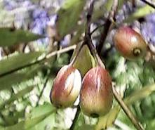
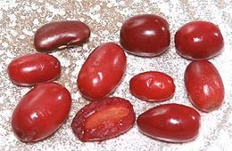
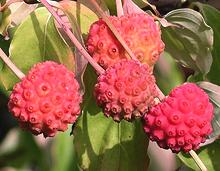

Magnolias

SAFARI
Users
Ogeechee Lime
 [White Tupelo, River lime, Sour gum, Wild lime; Nyssa ogeche of family Cornaceae]
This small to medium tree is native to a band extending from
the southern tip of South Carolina expanding diagonally across Georgia
into northern Florida, including the eastern half of the Panhandle. It
requires very moist sites, preferring river banks, and can grow to nearly
50 feet high. The fruit is usually a little over 1-1/2 inches long, with
thick, juicy, very sour flesh and a single seed. It is used to make
preserves and beverages. The tree has been heavily planted along the
lower Apalachicola River (southwestern Georgia and central Florida
Panhandle) for commercially valuable tupelo honey produced by bees.
Photo by FloridaSwampFlower (cropped) distributed under
license Creative Commons
Attribution-ShareAlike 3.0 Unported.
Cornelian Cherry
 [Dogberry, European Cornel, Dogwood; Shan zhu yu (China); Cornus mas of family Cornaceae]
This shrub or small tree is native to southern Europe from France through Turkey, Armenia, Georgia and Azerbaijan, and also Iran, Lebanon, Syria and China. The bright red or yellow fruit is usually a little over 3/4 inche long and 5/8 inch diameter with one seed, but in Ukraine they have commercially grown varieties that produce fruit over 1-1/2 inches long. The photo examples, shipped frozen from Lithuania, were up to 0.8 inch long and 0.53 inch diameter, weighing an average of 0.47 oz (1.6 gms) each.
The fruit is sour and not fully ripe until it has fallen from the
tree. The ripe flavor has been described as a mix of cranberry and
sour cherry. Through its range, the fruit is used to flavor alcoholic
and non-alcoholic beverages. It is particularly popular in Georgia, used
to make various preserves and as an ingredient in sauces. The fruit is
eaten with salt as a snack in Turkey and Iran.
Kousa Dogwood
 [Chinese Dogwood, Korean Dogwood, Japanese Dogwood; Cornus kousa of family Cornaceae]
This small tree is native to East Asia, Sikkim and Bhutan. It is widely planted as a decorative and has become naturalized in Hawaii, Connecticut and New York. The pinkish red fruit is a compound berry and usually about 1 inch diameter, but can grow to 1-1/2 inches.
The fruit is sweet and the custard-like pulp is considered delicious,
though the skin is tough and the pulp seedy. It is sometimes made into
wine.Young leaves can be cooked as greens.
Photo (cropped) contributed to the Public Domain.